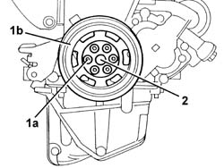
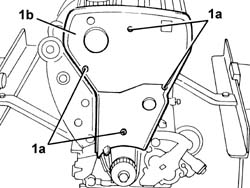
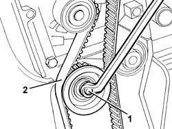
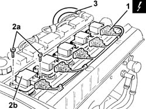
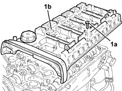
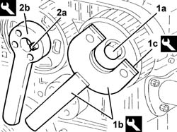
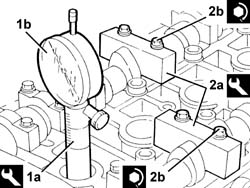
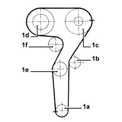
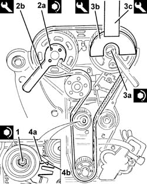
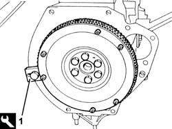

1032B16 TOOTHED timing BELT - R.R. with engine removed
- Path
- Procedures > 10 ENGINE > 1032 timing system > 1032B BELT-DRIVEN TIMING SYSTEM > 1032B16 TOOTHED timing BELT - R.R. with engine removed
- Kind
- repair procedure (removal / refitting; the operation number is the code)
- Applies to
- engines: 2.0 TB, 2.4 20V; all production periods
- Interactive page
- https://sloeber94.github.io/elrnDB-lThss/en/#/505906
Applies to: engines: 2.4 20V; all production periods
See in Op. 1032B10 TOOTHED timing BELT - R.R. for timing adjustment or replacement
Applies to: engines: 2.0 TB; all production periods
1. Undo the bolts (1a) and remove the engine pulley (1b).
2. Loosen the bolt fixing the timing belt toothed drive pulley.

Applies to: engines: 2.0 TB; all production periods
1. Undo the bolts (1a) and remove the timing belt protective cover (1b).

Applies to: engines: 2.0 TB; all production periods
1. Loosen the timing belt moving tensioner bolt.
2. Release and remove the timing belt.

Applies to: engines: 2.0 TB; all production periods
1. Disconnect the electrical connections from the ignition coils, then release the wiring from the fastenings and move it.
 | Description | Connector |
|---|---|---|
1 | Ignition coil | A030A |
| Description | Connector |
|---|---|---|
. | Ignition coil | A030B |
| Description | Connector |
|---|---|---|
. | Ignition coil | A030C |
| Description | Connector |
|---|---|---|
. | Ignition coil | A030D |
| Description | Connector |
|---|---|---|
. | Ignition coil | A030E |
2. Undo the bolts (2a) and remove the ignition coils (2b).
3. Disconnect the oil vapour recovery pipe from the tappet cover.

Applies to: engines: 2.0 TB; all production periods
1. Undo the bolts (1a) and remove the tappet cover (1b) complete with gasket.

Applies to: engines: 2.0 TB; all production periods
1. Loosen the bolt (1a) for the exhaust side driven timing pulley using tools (1b) and (1c) for counter-torque.
 | Description | Code | Function |
|---|---|---|---|
1b | Support for counter-torque | 1.860.831.000 | - |
| Description | Code | Function |
|---|---|---|---|
1c | Counter-torque | 1.860.848.000 | Lock pulley |
2. Loosen the bolts (2a) for the inlet side camshaft pulley using tool (2a) for counter-torque.
| Description | Code | Function |
|---|---|---|---|
2b | Counter-torque | 1.860.856.000 | Lock pulley |

Applies to: engines: 2.0 TB; all production periods
1. Fit the tool (1a) complete with dial gauge (1b) in the seat for the spark plug for cylinder no. 1.
| Description | Code | Function |
|---|---|---|---|
1a | Dial gauge support | 1.860.895.000 | Support |
- Rotate the crankshaft until the piston for cylinder no. 1 is at T.D.C. in the explosion stroke.
- Undo the bolts and remove the inlet side third camshaft cap and the exhaust side camshaft second cap.
2. Fit the templates (2a) in place of the camshaft caps that have been removed and secure them tightening the bolts (2b) to the recommended torque.
| Description | Code | Function |
|---|---|---|---|
2a | Templates | 1.860.962.000 | Measurement |
 | Value - daNm | Fastening | Component | Ø |
|---|---|---|---|---|
2b | 1.0 (Cylinder head side) | Bolt | TEMPLATES | M7 |

Applies to: engines: 2.0 TB; all production periods
1. Fit the timing toothed drive belt in the following order:
- toothed drive pulley (1a)
- fixed tensioner (1b)
- exhaust side toothed driven pulley (1c)
- inlet side toothed driven pulley (1d)
- moving tensioner (1e)
- water pump pulley (1f).

Applies to: engines: 2.0 TB; all production periods
- Using a screwdriver, rotate the moving timing tensioner until the timing belt is completely taut.
1. Tighten the nut fixing the moving timing tensioner to the recommended torque.
| Value - daNm | Fastening | Component | Ø |
|---|---|---|---|---|
1 | 2.3 - 2.8 | Nut | MOBILE TIMING TENSIONER | M8 |
2. Tighten the bolts (2a) for the inlet side toothed timing driven pulley using tool (2b) for counter-torque.
| Value - daNm | Fastening | Component | Ø |
|---|---|---|---|---|
2a | 0.9 - 1.2 | Bolt | DRIVE PULLEY(PULLIES) TIMING SYSTEM | M6 |
| Description | Code | Function |
|---|---|---|---|
2b | Counter-torque | 1.860.856.000 | Lock pulley |
3. Tighten the bolt (3a) for the exhaust side toothed timing driven pulley using the tools (3b) and (3c) for counter-torque.
| Value - daNm | Fastening | Component | Ø |
|---|---|---|---|---|
3a | 11.0 - 15.9 | Bolt | TIMING DRIVEN PULLIES | M12 |
| Description | Code | Function |
|---|---|---|---|
3b | Support for counter-torque | 1.860.831.000 | Support |
| Description | Code | Function |
|---|---|---|---|
3a | Counter-torque | 1.860.848.000 | Lock pulley |
- Undo the bolts and remove the tool.
| Description | Code | Function |
|---|---|---|---|
. | Templates | 1.860.962.000 | Measurement |
- Fit the camshaft cams removed previously and tighten the bolts to the recommended torque.
| Value - daNm | Fastening | Component | Ø |
|---|---|---|---|---|
. | (cylinder head side) 1.4 - 2.0 | Bolt | CAMSHAFT CAPS | M7 |
- Rotate the crankshaft throught two revolutions in the direction of rotation.
- Loosen the moving timing tensioner nut.
4. Using a screwdriver, rotate the moving timing tensioner until the moving tensioner reference (4a) coincoides with the fixed reference (4b).
- Tighten the nut fixing the moving timing tensioner to the recommended torque.
| Value - daNm | Fastening | Component | Ø |
|---|---|---|---|---|
. | 2.3 - 2.8 | Nut | MOBILE TIMING TENSIONER | M8 |
- Rotate the crankshaft throught two revolutions in the direction of rotation.
- The tensioner moving reference should coincide with the fixed reference.

Applies to: engines: 2.0 TB; all production periods
- Remove the tool complete with dial gauge.
| Description | Code | Function |
|---|---|---|---|
. | Dial gauge support | 1.860.895.000 | Support |
- Fit the spark plug for cylinder no. 1 and tighten it to the recommended torque.
| Value - daNm | Fastening | Component | Ø |
|---|---|---|---|---|
. | (Cylinder head side) 2.5 - 3.6 | - | SPARK PLUGS | M14 |
- Fit the tappet cover complete with gasket and secure it using the bolts.
- Position the ignition coils in their housings and secure them using the fixing bolts.
- Connect the electrical connections to the ignition coils and fasten the electrical wiring.
- Fit the timing belt protectivetappet cover and secure it using the bolts.
1. Fit the flywheel lock.
| Description | Code | Function |
|---|---|---|---|
. | Counter-torque | 1.860.846.000 | Flywheel lock |

Applies to: engines: 2.0 TB; all production periods
1. Fit the engine components single drive belt pulley (1a) and secure it tightening the bolts (1b) to the recommended torque.
| Value - daNm | Fastening | Component | Ø |
|---|---|---|---|---|
. | 2.3 - 3.3 | Bolt | DRIVE PULLEY(PULLIES) TIMING SYSTEM | M8 |
Applies to: engines: 2.0 TB; all production periods
- Remove the flywheel lock.
| Description | Code | Function |
|---|---|---|---|
. | Counter-torque | 1.860.846.000 | Flywheel lock |
Topics linked from this page (2)
- 1032B10 TOOTHED timing BELT - R.R. for timing adjustment or replacement
- 1032B14 TOOTHED timing BELT - R.R. for timing adjustment or replacement on versions with air conditioning